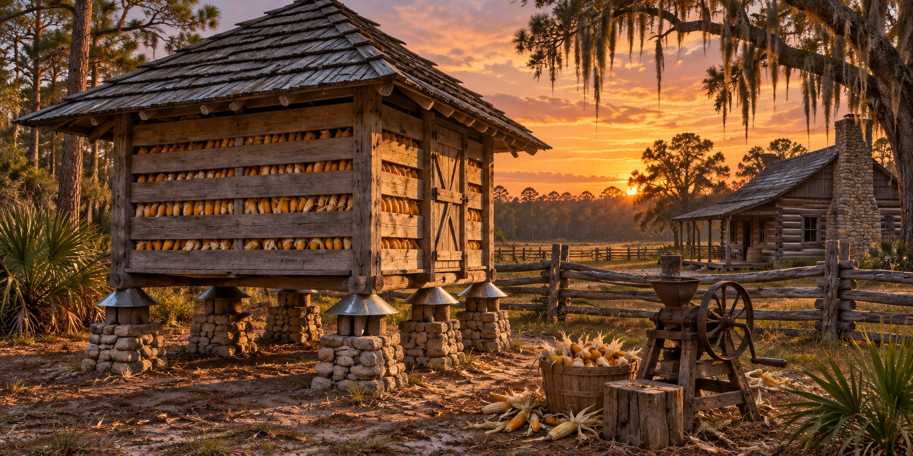

Corn Cribs
The Small Building That Stood Between a Pioneer Family and Hunger

The corn crib was not the tallest or most labor-intensive structure on a pioneer homestead, and its construction varied with a family’s resources. But what it held, the dried ear corn stored from harvest through the following spring, was the difference between a family that ate well through the year and one that ran short before the next crop. Corn was ground into grits and meal, cooked into hominy and fed to the hogs, chickens and mules that sustained the rest of the homestead.
Corn on the Florida Frontier
Corn cultivation in Florida long predated the arrival of American pioneer settlers. On a farm it could feed both people and animals, so protecting the harvest was important. A corn crib provided a dedicated storage place while the family kept seed for another planting.
The challenge was keeping it. Heat and humidity favored mold, weevils and rodents as much as corn. Ear corn stored damp molded within days, and rats, raccoons and opossums treated a pile of corn as the finest dining in the flatwoods.
The Design That Outsmarted the Pests
Raised supports helped protect stored corn from ground moisture and allowed air to move beneath the floor. Barriers around supports were another attempt to discourage climbing pests. Such details reduced risks rather than guaranteeing that rodents could never reach the grain.
The walls were built with deliberate gaps, spaced vertical boards or stacked rails, so air could carry off the moisture that causes mold, while still keeping out larger pests. The roof was tight and wide-eaved to throw rain clear of the open walls.
Harvest, Storage and the Annual Cycle
Harvesting and preparing corn for storage required repeated work. Families removed husks or retained them according to local practices and the way corn would be stored. The essential problem was protecting a useful crop from dampness and pests until it was needed for food or feed.
A crib full in November meant security; one running low by March meant anxiety. Seed corn, the best ears from the best plants, was kept apart, and losing it could set a family back a full year.
Double Cribs and Growing Farms
As a homestead grew, so did the crib. Many farmers built a double crib: two crib structures with a roofed passage between them that served as a covered work space for shucking and shelling and extra storage for tools and harness. A crib that overflowed after a good harvest told the whole settlement the farm was well managed.
Quick Facts
| Purpose | Store dried ear corn for people, livestock and hogs |
|---|---|
| Key feature | Raised storage with airflow; pest barriers varied |
| Walls | Spaced boards or rails for airflow |
| Stored as | Ear corn; husking and storage practices varied |
| Enemies | Moisture, rats, raccoons, weevils, mold |
| Shelling | By hand or with a hand-cranked sheller |
| Seed corn | Kept apart; best ears of the best plants |
Did You Know?
Shuckings brought neighbors together much as barn raisings did.
Vocabulary
Crib: a ventilated building for storing ear corn.
Shuck: the dried husk covering an ear of corn.
Hominy: corn kernels treated and cooked as food.
Discussion Questions
1. Why were the crib’s walls built with gaps?
2. What did a full crib mean for a family’s independence?
Related Articles
FLH-0050 — Building a Homestead
FLH-0056 — The Florida Smokehouse
Sources
Ste. Claire, Dana. Cracker: The Cracker Culture in Florida History. Museum of Arts and Sciences, Daytona Beach, 1998.
Dudley Farm Historic State Park, Newberry, FL. Preserved corn crib.
Milanich, Jerald T. Florida’s Indians from Ancient Times to the Present. University Press of Florida, 1998.
Florida Memory. State Library and Archives of Florida. floridamemory.com
Florida State Parks — History of Dudley Farm